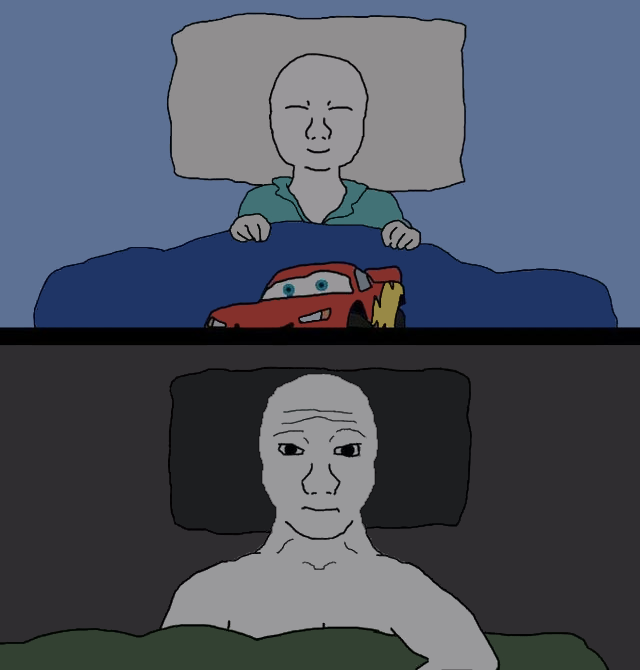

You have been told many lies, both about your own people and about others.
You were told that there are no biologically distinct races among the human population. You were told that all people are exactly the same in every way, from potential height to potential intelligence. You were told that any difference between one group of people and the next is purely a result of environmental factors. You believed these lies because they were told to you at a very young age by people whom you trusted and who probably believed them themselves. You believed these lies because it was easier to go along than to argue. You believed these lies because you wanted to be a good person.
Our people - white people - are suffering. We are being driven further and further toward the margins of the societies which our ancestors built, and when we are finally pushed out completely, there will be nowhere else for us to go. Your fellow whites are your mothers and fathers, your sons and daughters, your brothers and sisters. They are your family. You were told that to think of your race as your family is wrong - not just factually but morally. This, too, was a lie, intended to strip you of your connection to your people.
Your history is being twisted, degraded, and rewritten before your very eyes. Your ancient heroes are being torn down as “racists,” unworthy of your respect or admiration. The achievements of your people are being attributed to others in an attempt to convince you that your past is not worth preserving and that your people are not worth saving. Your children are being taught from as early as kindergarten that to be white is to be the beneficiary of centuries of oppression. All of this is a lie.
You no longer have the luxury of believing these lies.
If we do not act now, while there are still enough of us left to do something about it, our people will go extinct. Our family will cease to exist, and everything that our family built will go with us. If we choose not to act, we choose to condemn our children and our grandchildren; if we are complicit in our own oppression, we are complicit in theirs, as well.
There are powerful people who do not want you to read this. They want you to remain ignorant of what is happening. They want you to believe their lies and to never consider that they might not have your best interests at heart. They have conditioned you to dismiss any idea which goes against their orthodoxy. For the sake of your family, you must overcome that conditioning.
In this series, I intend to condense materials which have been spread out over numerous books, websites, and articles into a single document while keeping it short enough to read in one sitting. You can think of this document as a brief summary of the arguments in favor of the nationalist movement. These essays can be read individually or together, but they will have the most impact when read in order.
Wake up. Your people need you.
image source: unknown